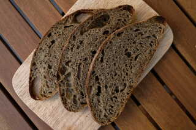

Gesunde Rezepte für Sauerteigbrot und Weiteres
Dieses Rezept hat eine ganz besondere Zutat: Hanfmehl. Bei der Herstellung von Hanföl oder anderen Nuss- oder Saatenölen bleibt eine entölte Masse zurück, die meistens Abfall ist. Allerdings lässt sich diese Masse trocknen. Das daraus entstehende Mehl ist durchaus sehr gesund und proteinreich. In diesem Brot habe ich entöltes Hanfmehl verwendet, Kürbismehl, Mandelmehl, Leinmehl oder ähnliches kann auch wunderbar in diesem Rezept verwendet werden. Trotz der eher kleinen Menge verleiht das Nussmehl dem Brot eine interessante Färbung und einen nussigen Geschmack.
Die Zubereitung ähnelt dem Kartoffel-Sauerteigbrot, das Brot ist also innerhalb eines Vormittags gebacken. Vorraussetzung ist ein sehr aktiver Sauerteig und ein warmer Platz, an dem der Teig gehen kann. Das Brot kann mit Dinkel oder mit Weizen zubereitet werden.
Morgens die Zutaten für den Sauerteig mischen und 2,5 Stunden bei 27 Grad aufgehen lassen. Das kochende Wasser mit dem Hanfmehl vermischen und abgedeckt quellen lassen.
Nach der Gehzeit alle Zutaten für den Hauptteig mischen und einige Minuten kneten. Anfangs 20-30 g des Wassers zurückhalten und bei Bedarf dazukneten. Bei der Verwendung von Weizen ist ggf. 30 g mehr Wasser nötig. Bei 27 Grad 2,5 Stunden gehen lassen, währenddessen 3 mal dehnen und falten. Der Teig sollte sein Volumen um etwa 50% vergrößert haben.
Den Teig vorsichtig auf eine unbemehlte Arbeitsfläche geben und sanft und locker rundwirken. 10 Minuten entspannen lassen und anschließend schonend zu einem straffen länglichen Laib formen. Den Teigling im Gärkorb entweder bei Raumtemperatur 60-90 Minuten oder bis zu 16 Stunden bei 5 Grad im Kühlschrank gehen lassen.
Das Brot wird nun im gut vorgeheizten Backofen bei 230 Grad 20 Minuten mit Dampf, dann weitere 15 bis 20 Minuten bei 210 Grad gebacken.